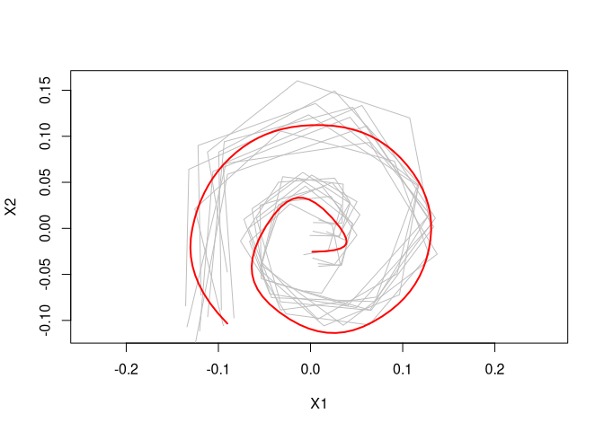

elastes is a R package that provides functions for the computation of functional elastic shape means over sets of open planar curves. The package is particularly suitable for settings where these curves are only sparsely and irregularly observed. It uses a novel approach for elastic shape mean estimation, where planar curves are treated as complex functions and a full Procrustes mean is estimated from the corresponding smoothed Hermitian covariance surface. This is combined with the methods for elastic mean estimation proposed in Steyer, Stöcker, Greven (2022). See Stöcker et. al. (2022) for details.
Installation
The simplest way to obtain elastes is to install it directly from CRAN. Type the following command in your R console:
install.packages("elastes")You can install the development version from GitHub with:
# install.packages("devtools")
devtools::install_github("mpff/elastes")Example
Calculate a smooth elastic shape mean for sparse spirals.
library(elastes)
# define spiral curve
curve <- function(t){
rbind(t*cos(13*t), t*sin(13*t))
}
# randomly draw sparse spirals with noise
set.seed(18)
data_curves <- lapply(1:10, function(i){
m <- sample(10:15, 1)
delta <- abs(rnorm(m, mean = 1, sd = 0.05))
t <- cumsum(delta)/sum(delta)
data.frame(t(curve(t)) + 0.07*t*matrix(cumsum(rnorm(2*length(delta))),
ncol = 2))
})
# apply random rotation and scaling to spiral curves
rand_scale <- function(curve){ ( 0.5 + runif(1) ) * curve }
rand_rotate <- function(curve){
names <- colnames(curve)
theta <- 2*pi*runif(1)
mat <- matrix(c(cos(theta), sin(theta), -sin(theta), cos(theta)), nrow = 2, ncol = 2)
curve.rot <- as.matrix(curve) %*% t(mat)
curve.rot <- as.data.frame(curve.rot)
colnames(curve.rot) <- names
return(curve.rot)
}
data_curves <- lapply(data_curves, rand_scale)
data_curves <- lapply(data_curves, rand_rotate)
# compute smooth procrustes mean using a 2nd order penalty in the estimation
knots <- seq(0,1, length = 11)
elastic_shape_mean <- compute_elastic_shape_mean(
data_curves,
knots = knots,
type = "smooth",
penalty = 2
)
plot(elastic_shape_mean)